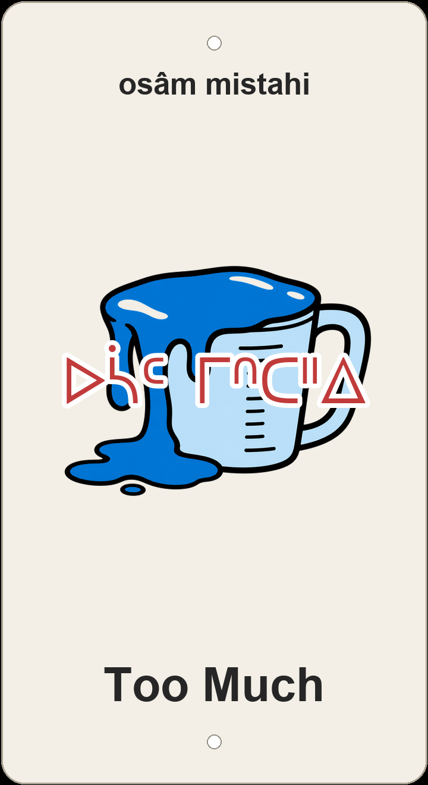

"Too much — osâm 'too / excessively' stacked on mistahi 'a lot' for an emphatic 'way too much.'"

Draft 3D-printed sign preview — overflowing measuring-cup icon, the syllabics ᐅᓵᒼ ᒥᐢᑕᐦᐃ, transliteration, and the English name.
Too Much is a short, cheeky trail name, and the Cree leans into it by stacking two intensifiers. mistahi already means 'much, a lot' — plenty on its own. Put osâm 'too, excessively' in front of it and you tip from 'a lot' over into 'too much, over the top, more than is good for you.' That extra osâm is doing exactly what the trail name is doing: a wink that something here is delightfully excessive.
The plaque art — an overflowing measuring cup — reads the name literally, but osâm also carries the slang colour of "you're too much": too funny, too wild, too far. It's the same shrug-and-grin register the English nickname has. And there's a tidy family connection lurking in mistahi: the mist- 'big, great' root it's built on is the very same root that makes a horse a 'big dog' (mistatim) and a machete a 'big iron knife' (mistâpiskihkomân) on the neighbouring signs. Bigness is one of Cree's most productive ideas, and "Too Much" is just bigness taken one step past sensible.
The trail is appropriately modest about all this excess: a short, quick ribbon (~221 m, gently downhill) in the central Edmonton river valley that turns up as a quick hit inside long link-up routes like the E-Town Crusher. It runs on ᓀᐦᐃᔭᐤ ᐊᐢᑭᕀ Nêhiyaw-Askiy — Plains Cree territory, Treaty 6, and a homeland of the Métis Nation.
A short, quick singletrack (~221 m, ~7 m drop) in the central Edmonton (south) river valley — a brief but fun segment that strings into longer river-valley routes like the E-Town Crusher. Explore the wider network on Trailforks.
Explore the trail on Trailforks, with a local preview from the uploaded GPX.
★ On the plaque. Two intensifiers stacked: 'a lot' pushed over into 'too much.' Carries the playful 'you're too much' overtone the English name has.
One tidy word for 'more than enough.' Leans toward 'surplus / overflow' — closest to the measuring-cup image — but loses the slang bite.
A full little clause — 'it's just too big.' Most explicit about overwhelming size, but wordier than a sign wants.
| English | SRO | Syllabics |
|---|---|---|
| too much / excessive (the plaque) | osâm mistahi | ᐅᓵᒼ ᒥᐢᑕᐦᐃ |
| too, excessively, over the top | osâm | ᐅᓵᒼ |
| much, a lot, greatly | mistahi | ᒥᐢᑕᐦᐃ |
| more than enough / surplus | ayiwâk | ᐊᔨᐗᐠ |
| it's just too big / too much | osâm ê-mistakisik | ᐅᓵᒼ ᐁ ᒥᔅᑕᑭᐢᐠ |
SRO uses ê î ô â. Syllabics match the SRO shown.
Dialectal preferences may affect minor spelling choices; check local norms for signage.
References: itwêwina, Online Cree Dictionary, Plains Cree Dictionary
Each sign is 3D printed in Edmonton. Want one for your own trail, cabin or wall? Email hello@nehiyomtb.ca.